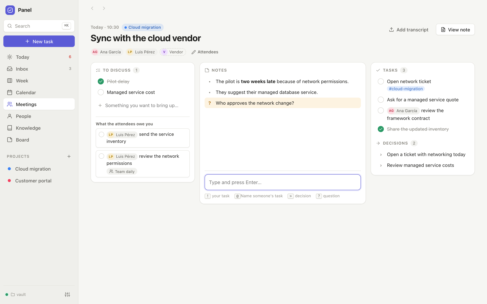
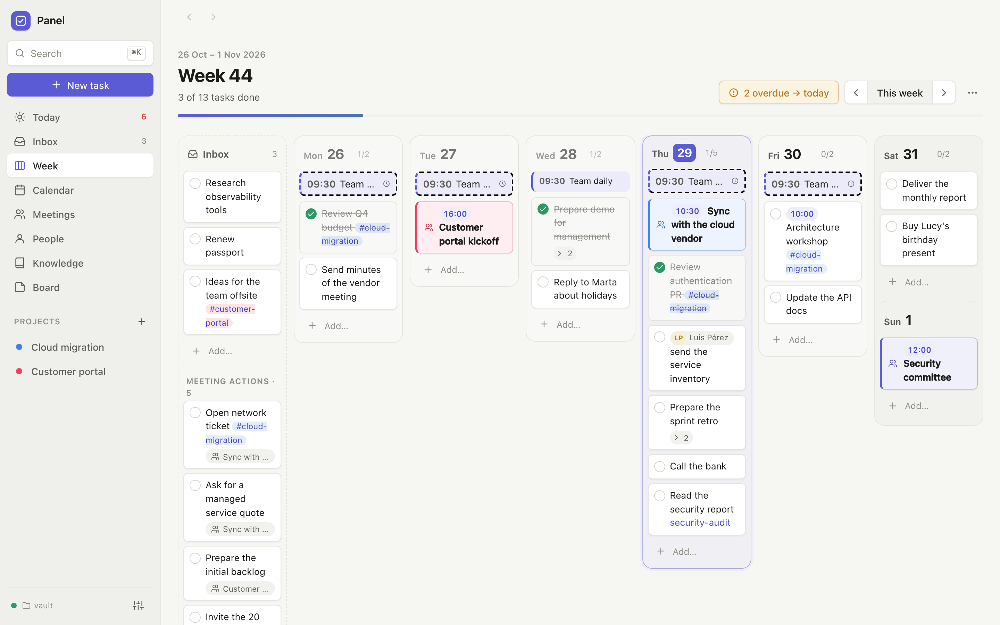
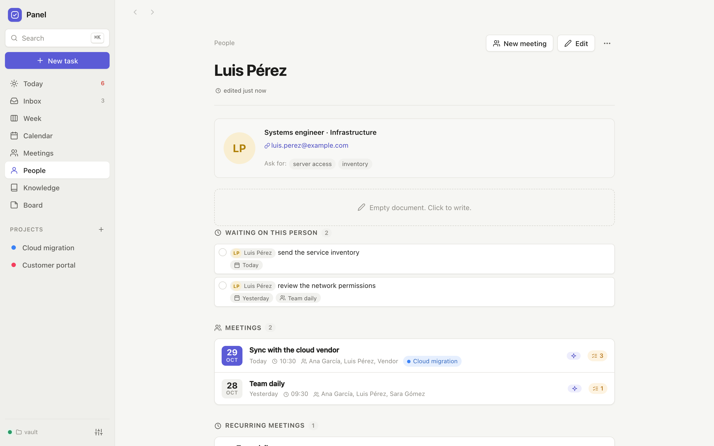
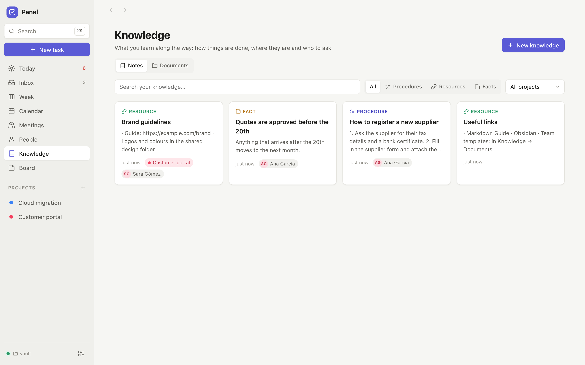

Panel
Your week, meetings, people and what you learn at work — in plain Markdown files that belong to you, ready for your AI assistant.
Tu semana, tus reuniones, tu gente y lo que aprendes en el trabajo, en Markdown que es solo tuyo.

Plan the week
Tasks and meetings in one day plan. Drag things around, bring overdue work to today.
Meetings that write themselves
Recurring meetings, attendees from your people, a focused meeting mode, and your AI turns quick notes into minutes and tasks.
A memory you can ask
People, procedures, links and documents you pick up at work, connected and searchable — by you or by your AI.
Just tell your AI
"Remind me…", "we finished…", "prepare the next daily": it files, closes and prepares things in your vault.
Yours, private
A small local program and a folder of Markdown. No accounts, no cloud you have to trust. Encrypted backups.


